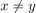
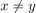
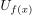
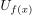
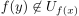
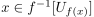
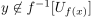
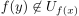
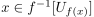
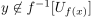

Stetige Injektion auf eine Frechet-Topologie
1. Satz
Seien  und
und  topologische Räume und
topologische Räume und  eine stetige Injektion.
Sei
eine stetige Injektion.
Sei  eine Frechet-Topologie, dann ist
eine Frechet-Topologie, dann ist  ebenfalls eine Frechet-Topologie.
ebenfalls eine Frechet-Topologie.
2. Beweis
Seien  mit , so gilt
mit , so gilt  .
Nach Annahme existiert eine Umgebungen  von
.
Nach Annahme existiert eine Umgebungen  von  mit 
Da Urbilder von Umgebungen unter stetigen Abbildungen wieder Umgebungen sind, gilt  mit  da gilt.
Analog für
mit 
Da Urbilder von Umgebungen unter stetigen Abbildungen wieder Umgebungen sind, gilt  mit  da gilt.
Analog für